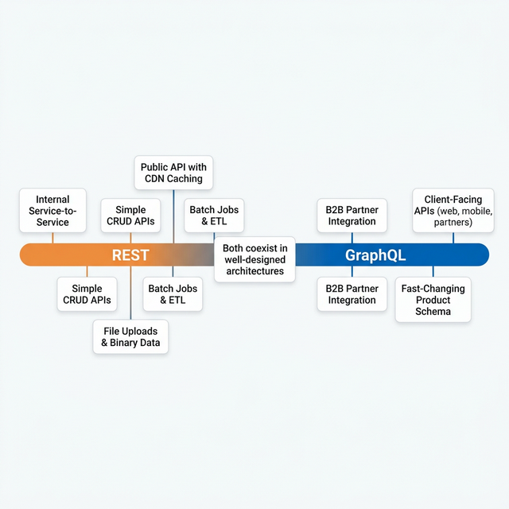

By: Rodrigo Ramos, March 2026
The tech community loves a good debate. REST vs GraphQL is one of those debates that can get very heated. People pick sides and defend their choice like it's a personal belief. I've been on both sides of this conversation across 20+ years in software engineering, and I've learned one thing above all: the right answer is always the one that delivers business results.
In my career, from building banking MVPs and scaling fintech platforms that handle hundreds of thousands of daily transactions, to building B2B collection systems, I've used both REST and GraphQL in production at scale. This article is not about which one is "better." It's about sharing real experience on when each one makes sense. More importantly, it's about when switching from one to the other actually helped us increase revenue, reduce costs, and onboard partners faster.
REST is the backbone of the modern web. It's reliable, well-documented, and understood by almost every developer. I've built many systems on REST APIs, from Java/Spring Boot backends to Node.js microservices. REST works. But at scale, some problems become impossible to ignore.
This is the most discussed problem, but few teams measure the actual impact. Let me give you a real example:
Imagine a collections platform that manages debit records. The REST endpoint
GET /api/debts/{id} returns a full debt object:
{
"id": "abc123",
"debtor_name": "John Doe",
"debtor_cpf": "123.456.789-00",
"debtor_email": "john@email.com",
"debtor_phone": "+55 11 99999-0000",
"debtor_address": { "street": "...", "city": "...", "state": "..." },
"original_amount": 1500.00,
"current_amount": 1650.75,
"interest_rate": 0.033,
"penalty_rate": 0.02,
"due_date": "2025-06-15",
"status": "overdue",
"creditor_id": "xyz789",
"creditor_name": "FinCorp",
"creditor_cnpj": "12.345.678/0001-00",
"portfolio_id": "port-001",
"last_contact_date": "2025-11-20",
"contact_attempts": 7,
"payment_history": [...],
"negotiation_history": [...],
"internal_notes": "...",
"created_at": "2025-01-10T10:30:00Z",
"updated_at": "2025-12-01T14:22:00Z"
// ... 20+ more fields
}
But the frontend dashboard showing the overview list only needs: debtor_name,
current_amount, status, due_date, and creditor_name.
That's 5 fields out of 40+.
Now multiply that by 400,000+ records processed daily. Every single API call sends about 35 unnecessary fields per record. That's not just a design problem you discuss on a whiteboard. That's a real cost on your AWS bill and real latency on your user's screen.
The opposite problem is also painful. Consider a mobile app that needs to show a debtor's profile screen with their debt details, payment history, and the creditor's contact information. In REST, this usually requires:
GET /api/debtors/{id} to get debtor infoGET /api/debtors/{id}/debts to get their debtsGET /api/debts/{debtId}/payments to get payment history for each debtGET /api/creditors/{creditorId} to get creditor infoThat's 4 HTTP calls minimum. If the debtor has multiple debts, the payments call multiplies. On a mobile network in Brazil with unstable 4G, this means slower screens, higher drop-off rates, and lower user engagement.
As your product grows, REST APIs tend to multiply. You start with clean resources:
/api/debts/api/debtors/api/creditorsThen the frontend team needs a "summary" view, so you create /api/debts/summary. Then the
mobile team needs a lighter version: /api/debts/mobile. Then a B2B partner needs debts with
creditor info included: /api/debts/full. Then another partner needs something different...
Before you know it, you have 15+ endpoints for the same resource, each maintained separately, each with its own tests, each with its own documentation. I've seen this happen in every REST-heavy system I've worked on. It's not bad engineering. It's a structural limitation of the pattern.
When you need to change your API without breaking existing users, REST forces you into versioning:
URL-based (/api/v1/, /api/v2/), header-based, or query parameter-based. Each
option has trade-offs, and keeping multiple API versions alive at the same time is one of the most
expensive, low-value activities a team can do.
GraphQL changes who is in control. Instead of the server deciding what data to send, the client says exactly what it needs. This simple change fixes the main problems listed above.
Using the same debt example, the client now sends:
query {
debts(status: "overdue", limit: 50) {
debtor_name
current_amount
status
due_date
creditor {
name
}
}
}
The response contains exactly those 5 fields. Nothing more, nothing less. For 400,000+ daily records, the payload size drops a lot. We measured about a 60-70% reduction in average response size compared to the same REST endpoints.
That 4-call problem for the debtor profile screen? With GraphQL, it becomes one request:
query DebtorProfile($id: ID!) {
debtor(id: $id) {
name
email
phone
debts {
current_amount
status
due_date
payments(last: 5) {
amount
date
method
}
creditor {
name
contact_email
}
}
}
}
One HTTP call. One response. All the data the screen needs. On mobile networks, the difference is clear and easy to measure.
GraphQL uses a strongly typed schema. Every field, every type, every relationship is clearly defined. This schema works as:
Need to add a new field? Just add it to the schema. Existing queries don't break because they don't ask
for it. Need to remove a field? Mark it as @deprecated(reason: "Use newField instead").
Users see the warning and can migrate at their own speed.
Compare this with the REST approach of keeping /v1 and /v2 running together for
months. In GraphQL, there is no versioning, just continuous, backward-compatible
growth. In a fast-moving fintech environment, this alone saved us weeks of engineering effort per
quarter.
This is where things get interesting, and where I've seen the biggest real-world impact. When you build a platform that serves multiple B2B partners, each partner has different data needs, different systems, and different timelines.
With REST, onboarding a new B2B partner usually looks like this:
GET /api/partners/a/debtsGET /api/partners/b/debtsEach partner gets a custom API. Each needs custom backend code, custom tests, custom docs, and custom maintenance. I've lived this, and at some point, the cost of onboarding a new partner is mostly engineering time, not business negotiation time.
With GraphQL, you expose one schema. Every partner asks for exactly what they need:
Partner A's query:
query {
debts(portfolio: "partner-a") {
debtor_name
current_amount
status
}
}
Partner B's query:
query {
debts(portfolio: "partner-b") {
debtor_name
current_amount
status
payments {
amount
date
method
}
}
}
Partner C's query:
query {
creditors {
name
metadata { industry, contact_email }
debts(portfolio: "partner-c") {
debtor_name
current_amount
status
payments {
amount
date
}
}
}
}
Zero custom endpoints. Zero custom backend code. The partners get the data they need from the same schema. When Partner D arrives next month with different requirements, you don't write a single line of backend code. They just write their query.
A key concern with B2B integration is data isolation. With GraphQL, you can add field-level access control in the resolvers:
The access control logic lives in one place (the resolver layer), not spread across many custom REST endpoints. This is cleaner, easier to audit, and much simpler to manage when you need to follow compliance rules in the financial sector.
This is the section that gets the business team interested. When you process hundreds of thousands of transactions daily in the cloud, every byte counts.
Let's use conservative, real-world numbers from a collections platform:
| Metric | REST | GraphQL |
|---|---|---|
| Average response size per record | ~4 KB | ~1.2 KB |
| Daily API calls | 400,000 | 400,000 |
| Daily data transferred | ~1.6 GB | ~0.48 GB |
| Monthly data transferred | ~48 GB | ~14.4 GB |
| Reduction | ~70% |
A 70% reduction in data transfer directly affects:
When your database is document-based (MongoDB) and your API layer lets clients ask for only the fields they need (GraphQL), you get a powerful combination:
If you run Lambda functions or serverless compute, the impact is even bigger. Serverless pricing is usually based on execution time x memory. Smaller payloads mean:
I would not be honest or useful if I said GraphQL is a perfect solution. After running it in production for years, here are the real problems you need to be ready for.
This is the most important performance trap. Look at this query:
query {
debts(limit: 100) {
debtor_name
creditor {
name
}
}
}
A simple implementation will:
That's 101 database queries for what should be 2. At 400,000 daily records, this will kill your database performance.
The fix: Use DataLoader (or similar batching tools). DataLoader collects all creditor IDs from the first query and gets them all in one batch query. This is not optional. It is essential for any production GraphQL server.
REST has a big advantage here: HTTP caching works out of the box. Each URL is a unique cache key. CDNs, browser caches, and reverse proxies all understand REST without extra setup.
GraphQL sends POST requests to a single endpoint (/graphql). The query is inside the request
body. This means:
Solutions exist, like Apollo Server's automatic persisted queries, Redis response caching, and field-level cache hints. But they all require extra work. REST gives you caching for free; GraphQL makes you build it.
GraphQL gives the client a lot of power. A bad or careless client can send a very deep nested query:
query {
debtors {
debts {
payments {
refunds {
audits {
// ... 10 levels deep
}
}
}
}
}
}
Without protection, this single query could crash your server. You must add:
REST uses HTTP status codes: 200, 404, 500. Everyone understands
them. GraphQL always returns 200 OK, even when there are errors. Errors come inside the
response body:
{
"data": { "debtor": null },
"errors": [{
"message": "Debtor not found",
"path": ["debtor"],
"extensions": { "code": "NOT_FOUND" }
}]
}
This can confuse monitoring tools and alert systems. Developers used to REST might miss errors because the HTTP status is always 200. You need to plan your error handling carefully. Standard HTTP monitoring will not catch GraphQL errors automatically.
This is often underestimated. Moving a team from REST to GraphQL requires learning:
In my experience, expect 2-4 weeks of slower delivery when introducing GraphQL to a team that only knows REST. The investment pays off, but it takes time.
GraphQL was designed for structured data queries. File uploads are not its strength. While the
graphql-upload package exists, it's not as clean as a simple multipart POST in REST. For
file-heavy features, we kept REST endpoints alongside GraphQL, and that works perfectly fine.
After years of running both in production, here is the decision table I use:
| Scenario | Recommendation | Why |
|---|---|---|
| Client-facing APIs with different consumers (web, mobile, partners) | GraphQL | Each consumer gets exactly what they need |
| Internal service-to-service communication | REST (or gRPC) | Fixed contracts, best performance, simple caching |
| B2B partner integration with different data needs | GraphQL | Self-service queries, no custom endpoints needed |
| Simple CRUD with stable requirements | REST | Less complex, faster to build, easier to cache |
| High-volume data processing (batch jobs, ETL) | REST | Simpler error handling, good for bulk operations |
| Fast-changing product with frequent schema updates | GraphQL | No versioning needed, backward-compatible by design |
| File uploads and binary data | REST | Built-in multipart support, simpler to implement |
| Public API with heavy CDN caching needs | REST | HTTP caching works out of the box; GraphQL needs workarounds |

GraphQL vs REST is not a yes-or-no choice. It's a spectrum. In my production systems, both live side by side. GraphQL powers the client-facing layer where flexibility and efficiency improve user experience and reduce costs. REST handles internal service communication, batch processing, and file uploads where simplicity and HTTP features are more useful.
The real skill is not mastering one or the other. It's knowing when to use which tool, having the experience to see the problems before they happen, and always measuring the impact against business results:
If the answer to any of those is yes, you made the right choice.
Choose the tool that delivers results. That's always the right architecture.